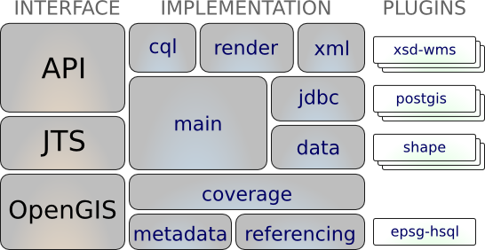

GeoTools¶
A GeoTools egy nyílt forráskódú (LGPL) Java könyvtár, mely szabványoknak megfelelő eljárásokat biztosít a térinformatikai adatok kezeléséhez és az Open Geospatial Consortium (OGC) specifikációin alapuló adatszerkezeteket használ.
A GeoTools-t számos projekt használja, többek között web szolgáltatások, parancssori programok és asztali alkalmazások. GeoTools-t használó OSGeo-Live alkalmazások: 52 North SOS, 52 North WPS, AtlasStyler, Geomajas, Geopublisher, GeoServer, and uDig.
{kind=link}
Alapfunkciók¶
Interfészek definíciója a kulcsfontosságú térbeli fogalmakhoz és adatstruktúrákhoz
- A JTS Topology Suite (JTS) által biztosított integrált geometriai támogatás
- Attribútum és térbeli szűrők az OGC Filter Encoding specifikáció felhasználásával
Egy világos adathozzáférési API az elemek eléréséhez, tranzakció támogatás és a szálak közötti zárolás
- GIS adatok elérése több fájl formátumból és téradatbázisból
- Koordinátarendszer és transzformáció
- Térképi vetületek kiterjedt tartománya használható
- Térbeli és nem térbeli adatok szűrése és elemzése
Egy állapotmentes, alacsony memória igényű megjelenítés, ez különösen hasznos a szerver oldali megoldásokban
- Összetett stílusokat alkalmazó térképek összeállítása és megjelenítése
Hatékony sémával segített XML sémát alkalmazó értelmezési technológia a GML tartalomhoz kötéshez
- Értelmezési és kódolási technológia számos OGC szabványhoz biztosít kötéseket, többek között GML, Filter, KML, SLD és SE.
GeoTools modulok: a nyílt modulrendszer lehetővé teszi, hogy további formátumokat kezeljünk a könyvtárral
- Az ImageIO-EXT projektből származó modul lehetővé teszi, hogy a GeoTools további raszter formátumokat olvasson GDAL-ból
GeoTools bővítmények
- További képességeket biztosít a mag könyvtár funkcióinak felhasználásával.

- Bővítmények biztosítják a gráf és a hálózatkezelést (legrövidebb útvonal keresés), az ellenőrzést, egy klienst a térkép szerverhez, kötéseket az xml értelmezéshez és kódoláshoz és a színkezelést.
GeoTools nem hivatalos
- A GeoTools egy szélesebb közösség számára kísérleti területként is működik, hogy segítse az új tehetségeket és elősegítse a kísérletezést.
- Néhány kiemelés: a swing támogatás (a geotools oktatóanyagokban használják), swt, helyi és web feldolgozás támogatás, további szimbólum rendszer, további adatformátumok, rács generálás és az ISO Geometria néhány megvalósítása.
Támogatott formátumok¶
raszter formátumok és adat elérés:
arcsde, arcgrid, geotiff, grassraster, gtopo30, image (JPEG, TIFF, GIF, PNG), imageio-ext-gdal, imagemoasaic, imagepyramid, JP2K, matlab.
Adatbázis „jdbc-ng” támogatás:
db2, h2, mysql, oracle, postgis, spatialite, sqlserver.
Vektor formátumok és adat elérés:
app-schema, arcsde, csv, dxf, edigeo, excel, geojson, org, property, shapefile, wfs.
XML kötések:
Java adatstruktúrák és kötések a következőkhöz: xsd-core (xml simple types), fes, filter, gml2, gml3, kml, ows, sld, wcs, wfs, wms, wps, vpf.
További geometria, szűrő és stílus értelmező/kódoló érhető el a DOM és SAX alkalmazásokból.
Implementált szabványok¶
Számos Open Geospatial Consortium (OGC) szabvány:
- OGC Style Layer Descriptor / Symbology Encoding adatstruktúrák és megjelenítő motor
- OGC General Feature Model beleértve a Simple Feature támogatást
- A raszter információ OGC Grid Coverage reprezentációja
- OGC Filter és Common Constraint Language (CQL)
- Web Feature Service (WFS), Web Map Service (WMS) kliensek és Web Process Service (WPS) kísérleti támogatás
- ISO 19107 geometria
Részletek¶
Honlap: http://geotools.org/
Licenc: LGPL
Támogatott platformok: Cross Platform Java 8,9,10
API Interfészek: Java
Támogatás: Értesítések és támogatás